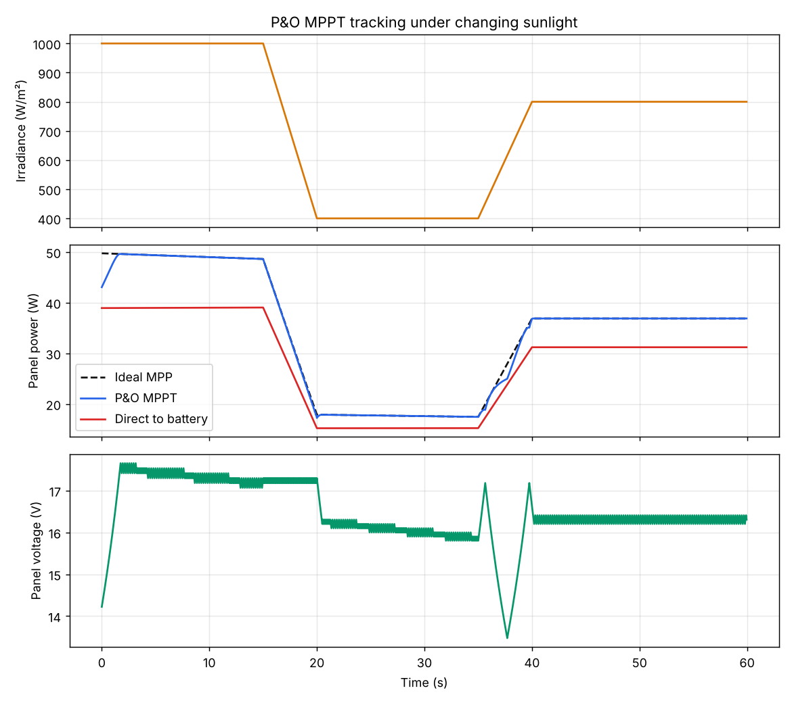
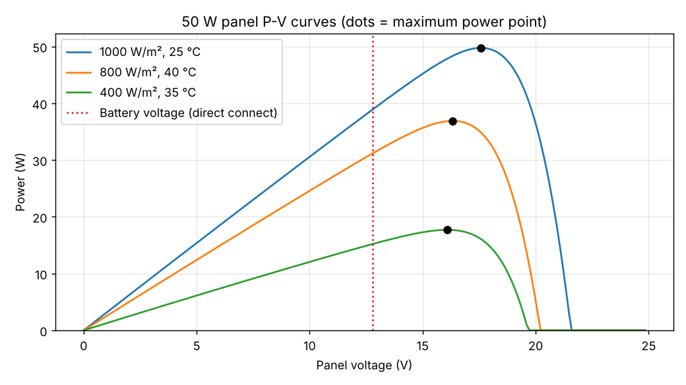

What the simulation shows
We ran the tracker on a model of a 50 W panel for 60 seconds of changing weather: full sun, a passing cloud, then partial recovery while the panel warmed from 25 °C to 40 °C.
How it works
A solar panel gives its most power at one voltage, about 17.6 V for this panel in full sun. A 12 V battery would drag the panel down to around 12.8 V and waste roughly a fifth of the power. The buck converter sits between them, so the panel can stay at its best voltage while the battery gets its own.
Perturb and Observe, every 50 ms
- Measure panel voltage and current, and work out the power.
- Nudge the PWM duty cycle by 0.5 %. In a buck converter, panel voltage ≈ battery voltage ÷ duty, so this moves the panel voltage.
- If power went up, keep nudging the same way. If it went down, turn around.
- Repeat. The operating point climbs the curve and then hovers around the peak.
Tracking under changing sunlight


Design values
Worked out in design/buck_design.py.
| Part | Value | Why |
|---|---|---|
| Switching frequency | 31.25 kHz | Arduino Timer1, 16 MHz ÷ 512, above hearing range |
| Duty cycle at the peak | 0.78 | 13.8 V ÷ 17.6 V |
| Inductor | 220 µH, 5.2 A | Keeps ripple near 30 % of the 3.6 A output at 22 V input |
| Output capacitor | 100 µF, 25 V | Under 50 mV ripple on the battery side |
| Input capacitor | 470 µF, 35 V | Carries 1.5 A RMS pulsed current |
| Switches | 2 × IRFZ44N | 55 V, 17.5 mΩ, driven by an IR2104 half-bridge driver |
| Night blocking diode | MBR1045 | Stops the battery draining into the panel after dark |
Charging stages
Lead-acid batteries need gentler charging as they fill up, so the firmware switches mode on battery voltage and current.
Bulk
MPPT runs and every available watt goes into the battery until it reaches 14.4 V.
Absorb
Duty cycle is trimmed to hold 14.4 V while the charging current tapers off.
Float
Below 0.3 A, the target drops to 13.8 V to keep the battery topped up without gassing.
Hardware
| Part | Job |
|---|---|
| Arduino Nano | MPPT, charging stages, PWM, LCD |
| IR2104 + 2 × IRFZ44N | Synchronous buck power stage |
| ACS712-05B | Panel current sensing |
| 47 kΩ / 10 kΩ dividers | Panel and battery voltage sensing |
| 16×2 I2C LCD | Shows panel volts, watts, battery volts and stage |